Next: Continuation of torus bifurcation Up: Continuation of fold bifurcation Previous: Fold of cycles initialization Contents
| 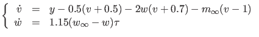 | (74) |
We find a stable equilibrium (EP) for 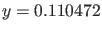 and 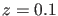 at
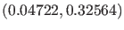 by time integration. We continue this equilibrium with free parameter  for decreasing values of
for decreasing values of  by running testEquilMLfast.m:
by running testEquilMLfast.m:
p=[0.11047;0.1];ap1=[1]; [x0,v0]=init_EP_EP(@MLfast,[0.047222;0.32564],p,ap1); opt=contset; opt=contset(opt,'Singularities',1); opt=contset(opt,'MaxNumPoints',65); opt=contset(opt,'MinStepsize',0.00001); opt=contset(opt,'MaxStepsize',0.01); opt=contset(opt,'Backward',1); [x,v,s,h,f]=cont(@equilibrium,x0,[],opt); cpl(x,v,s,[3 1]);
The output is as follows:
>> testEquilMLfast first point found tangent vector to first point found label = H , x = ( 0.036756 0.294770 0.075658 ) First Lyapunov coefficient = 8.238955e+00 label = LP, x = ( -0.033738 0.136501 -0.020727 ) a=-1.036700e+01 Neutral saddle label = H , x = ( -0.119894 0.045956 0.033207 ) label = LP, x = ( -0.244914 0.008514 0.083257 ) a=-2.697425e+00 elapsed time = 0.1 secs npoints curve = 65
We find a Hopf (H) bifurcation point at 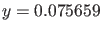, two limit points (LP) at 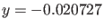 and 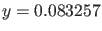 and a neutral saddle (H) at 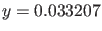. There are stable equilibria before the first H point and after the second LP point and unstable equilibria between the first H point and the second LP point. The Lyapunov coefficient in the first Hopf point 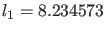 is positive which means that the periodic orbits are born unstable. The results are plotted using the plot function cpl, cf. §3.9 where the fourth argument is used to select the third and first component of the solution which are the parameter
The detected Hopf point is used to start a limit cycle continuation. We choose 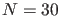 test intervals and  collocation points for the discretization.
collocation points for the discretization.
testEquilMLfast x1=x(1:2,s(2).index);p=[x(end,s(2).index);0.1]; [x0,v0]=init_H_LC(@MLfast,x1,p,ap1,0.0001,30,4); opt=contset; opt=contset(opt,'IgnoreSingularity',1); opt=contset(opt,'Singularities',1); opt=contset(opt,'MaxNumPoints',50); [x2,v2,s2,h2,f2]=cont(@limitcycle,x0,v0,opt); plotcycle(x2,v2,s2,[1 2]);The output is as follows:
>> testLCMLfast first point found tangent vector to first point found label = H , x = ( 0.036756 0.294770 0.075658 ) First Lyapunov coefficient = 8.238955e+00 label = LP, x = ( -0.033738 0.136501 -0.020727 ) a=-1.036700e+01 label = H , x = ( -0.119894 0.045956 0.033207 ) label = LP, x = ( -0.244914 0.008514 0.083257 ) a=-2.697425e+00 elapsed time = 0.1 secs npoints curve = 65 first point found tangent vector to first point found Limit point cycle (period = 4.222012e+00, parameter = 8.456948e-02) Normal form coefficient = -2.334578e-01 elapsed time = 4.0 secs npoints curve = 50
The periodic orbit is initially unstable. We detect a limit point of cycles LPC at 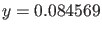. At this point the stability is gained. Afterwards the stability is preserved but the period tends to infinity and the periodic orbits end in a homoclinic orbit. The results can be seen in Figure 21.
We now compute a curve of fold bifurcations of limit cycles.
The starting vector x0 is calculated from the LPC on the previously computed curve of limit cycles, using init_LPC_LPC. Continuation is done using a call to the standard continuer with limitpointcycle as curve definition file.
We free both  and
and  to continue the LPC curve through this LPC point. The computations are done by executing the script testLPCMLfast.m:
to continue the LPC curve through this LPC point. The computations are done by executing the script testLPCMLfast.m:
testEquilMLfast x1=x(1:2,s(2).index);p=[x(end,s(2).index);0.1]; [x0,v0]=init_H_LC(@MLfast,x1,p,ap1,0.0001,30,4); opt=contset; opt=contset(opt,'IgnoreSingularity',1); opt=contset(opt,'Singularities',1); opt=contset(opt,'MaxNumPoints',50); opt=contset(opt,'FunTolerance',0.0000001); opt=contset(opt,'VarTolerance',0.0000001); [x2,v2,s2,h2,f2]=cont(@limitcycle,x0,v0,opt); [x0,v0]=init_LPC_LPC(@MLfast,x2,s2(2),[1 2],30,4); opt=contset; opt=contset(opt,'FunTolerance',0.0001); opt=contset(opt,'VarTolerance',0.0001); opt=contset(opt,'MaxNumPoints',30); %opt=contset(opt,'Backward',1); opt=contset(opt,'Singularities',1); [x3,v3,s3,h3,f3]=cont(@limitpointcycle,x0,v0,opt); plotcycle(x3,v3,s3,[1 2]);
The output is as follows:
>> testLPCMLfast first point found tangent vector to first point found label = H , x = ( 0.036756 0.294770 0.075658 ) First Lyapunov coefficient = 8.238955e+00 label = LP, x = ( -0.033738 0.136501 -0.020727 ) a=-1.036700e+01 Neutral saddle label = H , x = ( -0.119894 0.045956 0.033207 ) label = LP, x = ( -0.244914 0.008514 0.083257 ) a=-2.697425e+00 elapsed time = 0.4 secs npoints curve = 65 first point found tangent vector to first point found Limit point cycle (period = 4.222012e+00, parameter = 8.456948e-02) Normal form coefficient = -2.334578e-01 elapsed time = 3.9 secs npoints curve = 50 first point found tangent vector to first point found elapsed time = 7.1 secs npoints curve = 30
The results are plotted using the standard plot function plotcycle where the fourth argument is used to select the coordinates. The results can be seen in Figure 22. We note that it shrinks to a single point. The labels of the plot are added manually .